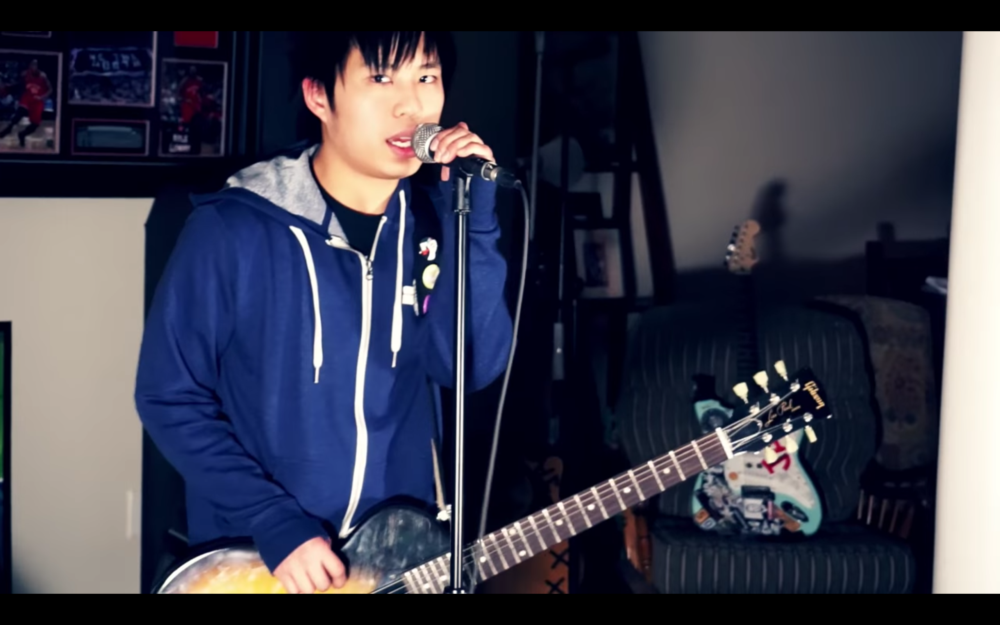

12 of the best gifts for any Pop-Punk Fan
In Jarrod Alonge’s version of The Twelve Days of Christmas, he pins the love of Christmas with popular yet very stereotypical gifts for Pop-Punk Fans.
Feb. 12th 2017

Hi! My name is Timothy and my favorite genre of music is Pop-Punk. This blog will feature Pop-Punk news that interests me and include my personal opinions.
My Recommended Music
-
Hold Fast by The Crookes
Spotify
-
Clean by The Japanese House
Spotify
-
I like it when you sleep, for you are so beautiful yet so unaware of it by The 1975
Spotify
-
Your Favorite Weapon by Brand New
Spotify
-
II by Bad Books
Spotify
-
The Tragic Thrills by The Tragic Thrills
Spotify

Green Day’s “She” like you’ve never heard it before
I recently discovered this Canadian Pop-Punk Cover Band on YouTube called Minority 905.
Feb. 8th 2017

Jake Ewald from Modern Baseball’s New Music
Jake has been working on a side project away from Modern Baseball called Slaughter Beach, Dog and it brings a whole new vibe to the already classic voice Modern Baseball is known for.
Feb. 1st 2017

Neck Deep’s Ben Barlow and Fans Perform A Part Of Me
A Part of Me has always been my favorite song by Neck Deep.
Jan. 27th 2017

Are you ready for Warped Tour?
Warped Tour is great and all but unless you have a plan you aren’t going to make the best of your experience.
Jan. 23th 2017
We the Kings 10 Tour
We the Kings is on its 10 year tour with Cute is what we aim for.
Jan. 17th 2017
NEW FOUND GLORY Single out this February
New Found Glory has announced a new album “Makes Me Sick” set to release April 28th but don’t worry your appetite for new music will soon be filled February 28th when they release a new single.
Jan. 7th 2017